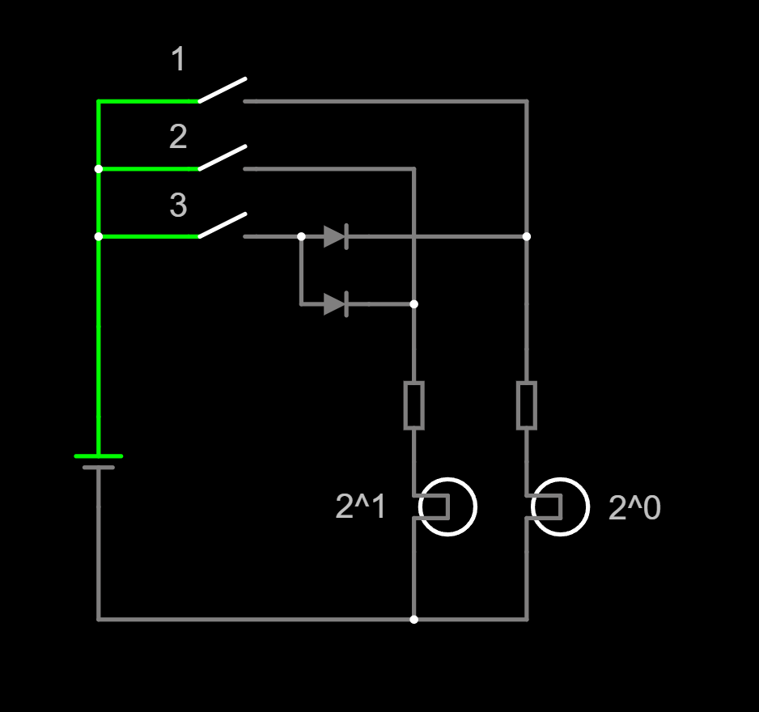
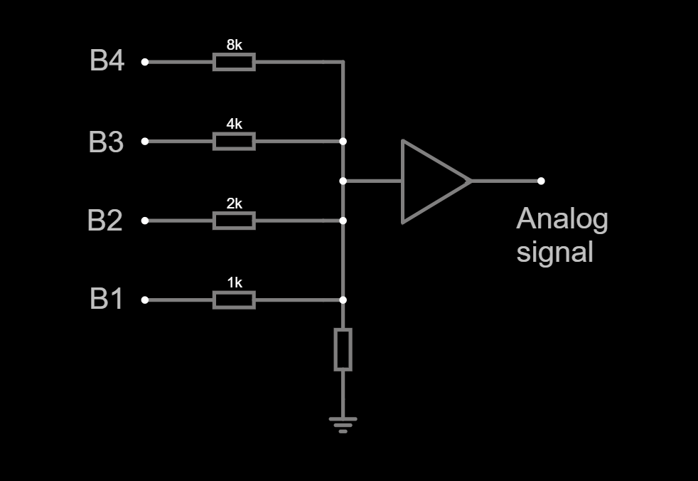
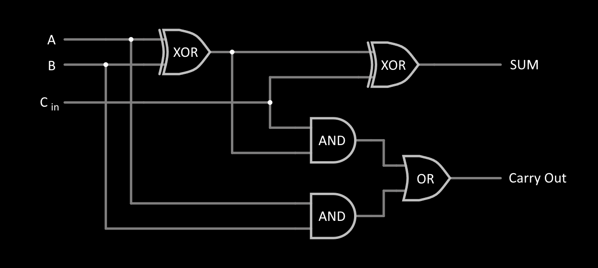

Polovodič typu P
- do kremíka sa pridá trojmocný prvok (napr. hliník),
- vznikajú diery (kladné nosiče),
- prvok sa nazýva akceptor.
Polovodič typu N
- do kremíka sa pridá päťmocný prvok (napr. fosfor),
- vznikajú voľné elektróny (záporné nosiče),
- prvok sa nazýva donor.
Príklad:
Si + Al → typ P (má o jeden elektrón menej)Si + P → typ N (má o jeden elektrón viac)
Diera je miesto, kde chýba elektrón. Keď sa elektrón presunie, „zanechá“ doterajšiu dieru a zaplní inú. Zvonku to vyzerá, akoby sa pohybovala kladná častica opačným smerom ako elektróny.
Príklad:
- Elektrón sa pohne z pozície
4 → 5.
- Diera sa javí, že sa pohla z
5 → 4 (opačný smer).


Bipolárny tranzistor (BJT)
- typy NPN / PNP
- prúd je riadený prúdom (bázový prúd)
- nosiče sú elektróny aj diery → bi-polárny
- vyššie prúdy, viac tepla
Unipolárny tranzistor (FET)
- riadený elektrickým poľom, takmer bez prúdu na gate
- prepínanie rýchlejšie, menšie straty
- nosič je iba jeden typ (elektróny alebo diery)
- MOS – Metal Oxide Semiconductor
- CMOS – Complementary MOS (používa dvojice NMOS + PMOS)
- FET – Field Effect Transistor (tranzistor riadený elektrickým poľom)
- More-than-Moore
- špecializované čipy (GPU, AI akcelerátory)
- systémová integrácia (SoC)
- Beyond Moore
- kvantové počítače
- optické počítače
- grafénové a iné nové materiály
- 3D čipová architektúra
SMD – Surface Mounted Device
- súčiastka montovaná priamo na povrch dosky (bez drôtových vývodov)
PCB – Printed Circuit Board
- plošný spoj (doska s medenými vodivými vrstvami)
Zadané:
- P = 5 W
- R_th = 20 K/W
- T_okolie = 20 °C
- T_limit = 100 °C
Výpočet aktuálnej teploty:
ΔT = P × R_th = 5 × 20 = 100 °C
T_chip = 20 + 100 = 120 °C → prekročenie o 20 °C
Limitná teplota: 100 °C
Povolený nárast teploty:
100 – 20 = 80 °C
Povolený výkon:
P_max = 80 / 20 = 4 W
O koľko znížiť výkon?
5 W – 4 W = 1 Watt
